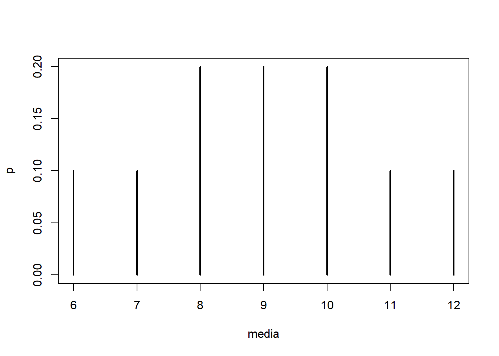

6 Distribuciones muestrales
La distribución de probabilidad de un estadístico se denomina distribución muestral.
6.1 Distribución muestral para la media
La distribución muestral de \(\bar{X}\) es la distribución de probabilidad de todos los valores de la media muestral \(\bar{X}\).
6.1.1 Ejemplo
Una empresa tiene 5 empleados de producción, el salario por hora se presenta a continuación:
| Empleado | Salario(dólares) |
|---|---|
| A | 3 |
| B | 6 |
| C | 9 |
| D | 12 |
| E | 15 |
- ¿Cuál es la media de la población?
- ¿Cuál es la distribución de muestreo de medias para una muestra de tamaño 3?
library(gtools)
muestras<-combinations(5, 3, c(3,6,9,12,15))
muestras <-data.frame(muestras)
media<-rowMeans(muestras)
n=nrow(muestras)
p=table(media)/n
plot(p)
- ¿Cuál es la media de la distribución de muestreo?
library(gtools)
muestras<-combinations(5, 3, c(3,6,9,12,15))
muestras <-data.frame(muestras)
media<-rowMeans(muestras)
n=nrow(muestras)
p=table(media)/n
p## media
## 6 7 8 9 10 11 12
## 0.1 0.1 0.2 0.2 0.2 0.1 0.1matriz_datos <- matrix(c(6, 7, 8, 9, 10, 11, 12,
0.1, 0.1, 0.2, 0.2, 0.2, 0.1, 0.1),
nrow = 2, byrow = TRUE)
matriz_datos ## [,1] [,2] [,3] [,4] [,5] [,6] [,7]
## [1,] 6.0 7.0 8.0 9.0 10.0 11.0 12.0
## [2,] 0.1 0.1 0.2 0.2 0.2 0.1 0.1## [1] 96.2 Uso
La distribución muestral de \(\bar{X}\) se usa para obtener información probabilística acerca de qué tan cerca se encuentra la media muestral de la media poblacional \(\mu\).
6.3 Muestreo a partir de poblaciones que siguen una distribución normal
Cuando el muestreo se realiza a partir de una población que sigue una distribución normal, la distribución de la media de la muestra tiene las siguientes propiedades:
- La distribución de \(\bar{X}\) será normal.
- La media, \(\mu_{\bar{X}}\), de la distribución de \(\bar{X}\) será igual a la media de la población de la cual se seleccionaron las muestras.
- La varianza, \(\sigma^2_{\bar{X}}\) de la distribución de \(\bar{X}\) será igual a
\[ \sigma^2_{\bar{X}}=\dfrac{\sigma^2}{n} \]
La notación será \[ \bar{X}\sim N(\mu,\dfrac{\sigma}{\sqrt{n}}) \]
6.3.1 Ejemplo
Suponga que en una población grande de seres humanos, la dimensión del diámetro craneal sigue una distribución aproximadamente normal, con una media de 185.6 mm y una desviación estándar de 12.7 mm. ¿Cual es la probabilidad de que una muestra aleatoria de tamaño l0 de esta población tenga una media mayor que 187?
X:= Dimensión del diámetro craneal, \(X\sim N(\mu=185.6, \sigma=12.7)\)
Debemos calcular \(P(\bar{X}>187)\), para esto, primero calculamos el error estándar: \[ \sigma_{\bar{X}}=SE(\bar{X})=\dfrac{\sigma}{\sqrt{n}}=\dfrac{12.7}{\sqrt{10}} \]
así: \(\bar{X}\sim N(\mu=185.6, \sigma_{\bar{X}}=12.7)\)
## [1] 4.016093## [1] 0.3636957la probabilidad de que una muestra aleatoria de tamaño l0 de esta población tenga una media mayor que 187 es de 0.364.
library(mosaic)
plotDist("norm",
mean = mu,
sd = se,
groups = x >=187,
type = "h",
xlab ="",
ylab = "",
main='Densidad',
sub = paste('Media= ', mu, ' SE=', round(se,3) )) 
6.3.2 Ejercicio
La duración de la enfermedad de Alzheimer desde el principio de síntomas hasta el fallecimiento varía de 3 a 20 años; el promedio es 8 años con una desviación estándar de 4 años. El administrador de un gran centro médico al azar selecciona los registros médicos de 30 pacientes de Alzheimer ya fallecidos, y toma la duración promedio. Encuentre las probabilidades aproximadas para:
- La duración promedio es menor a 7 años.
- La duración promedio excede a 7 años.
- La duración promedio está a no más de 1 año de la media poblacional \(\mu=8\).
- ¿Cuántas observaciones deben estar incluídas en la muestra si deseamos que \(\bar{X}\) se encuentre a no más de 1 año de \(\mu\) con probabilidad de 0.95?
6.4 Teorema del límte central, TLC
Si muestras aleatorias de \(n\) observaciones se sacan de una población no normal con media finita \(\mu\) y desviaicón estándar \(\sigma\), entonces cuando \(n\) es grande, la distribución de muestreo de la media muestral ${X} $ está distribuida normalmente en forma aproximada, con media \(\mu\) y desviación estándar \(\dfrac{\sigma}{\sqrt{n}}\).
La forma normal estándar es:
\[ Z=\frac{\bar{X}-\mu}{\frac{\sigma}{\sqrt{n}}} \]
6.4.1 Ejemplo
El costo medio de la colegiatura en una universidad estatal de Estados Unidos es $4260 anuales. Considere este valor como media poblacional y asuma que la desviación estándar poblacional es $900. Suponga que selecciona una muestra aleatoria de 50 universidades.
- Presente la distribución muestral de \(\bar{X}\) como media muestral de la colegiatura en las 50 universidades.
\[ \mu_{\bar{X}}=\mu=4260\qquad \sigma_{\bar{X}}=SE(\bar{X})=\dfrac{\igma}{\sqrt{n}}=\dfrac{900}{\sqrt{50}}=127.2792 \]
## [1] 127.2792De esta forma
\[ \bar{X}\sim N(900,127.2792) \]
- ¿Cuál es la probabilidad de que la muestra aleatoria simple proporcione una media muestral que no difiera de la media poblacional en más de $250?
\[\begin{align*} P(|\bar{X}-\mu|\leq 250)&=P(-250\leq \bar{X}-\mu\leq 250)\\ &=P(-250\leq \bar{X}-\mu\leq 250)\\ &=P(\dfrac{-250}{\dfrac{\sigma}{\sqrt{n}}}\leq \dfrac{\bar{X}-\mu}{\dfrac{\sigma}{\sqrt{n}}}\leq \dfrac{250}{\dfrac{\sigma}{\sqrt{n}}})\\ &=P(\dfrac{-250}{127.279}\leq Z\leq \dfrac{-250}{127.279} )\\ &=0.9504 \end{align*}\]
## [1] 0.9504914La probabilidad de que la muestra aleatoria simple proporcione una media muestral que no difiera de la media poblacional en más de $250 es de 0.950.
- ¿Cuál es la probabilidad de que la muestra aleatoria simple proporcione una media muestral que no difiera de la media poblacional en más de $100?